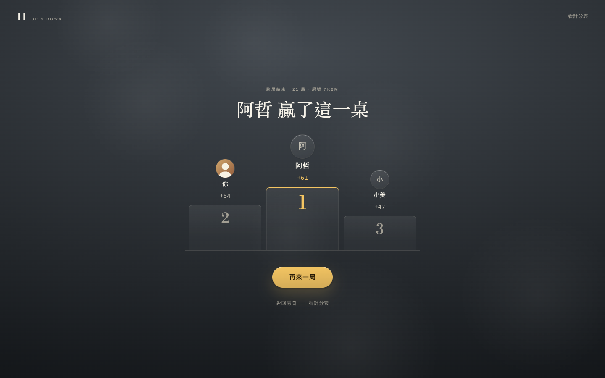
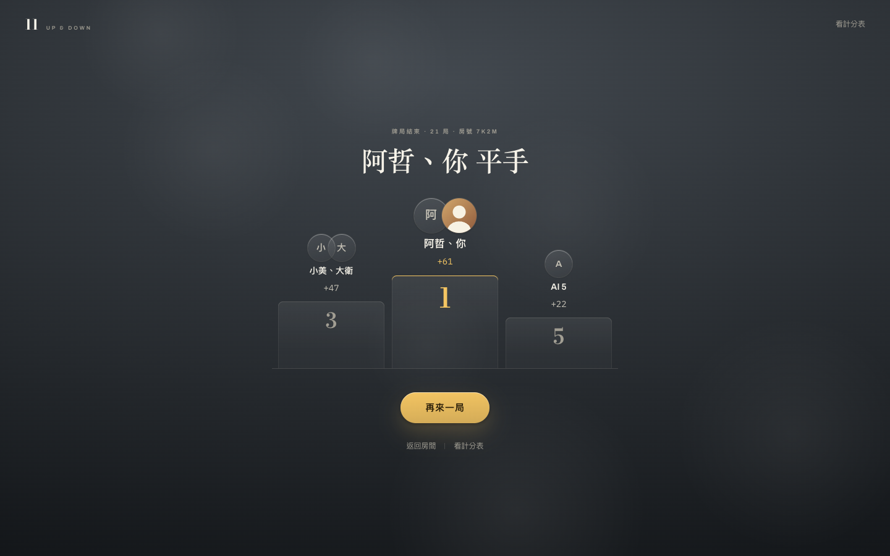
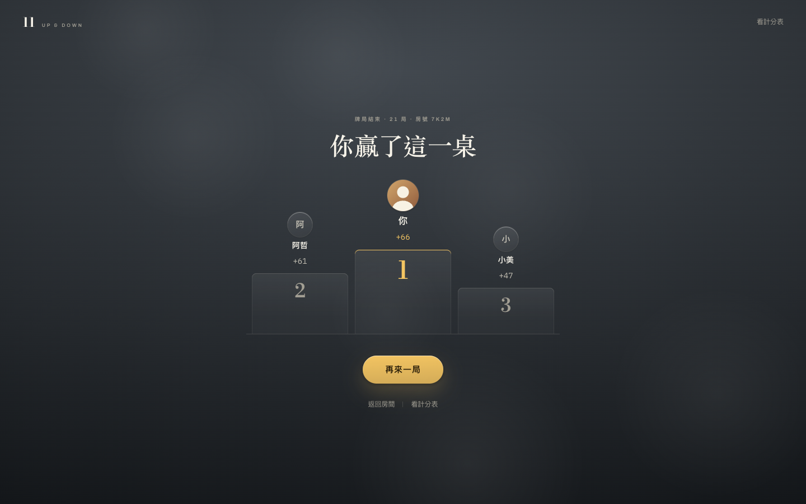
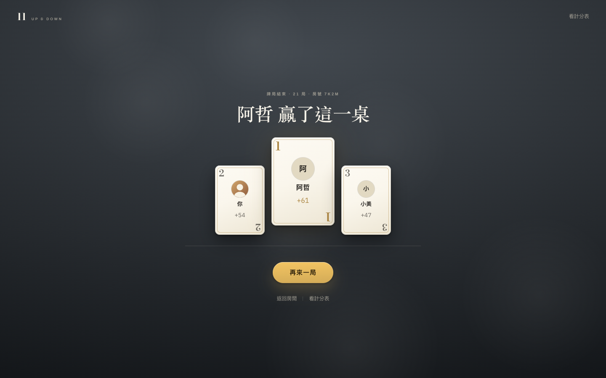
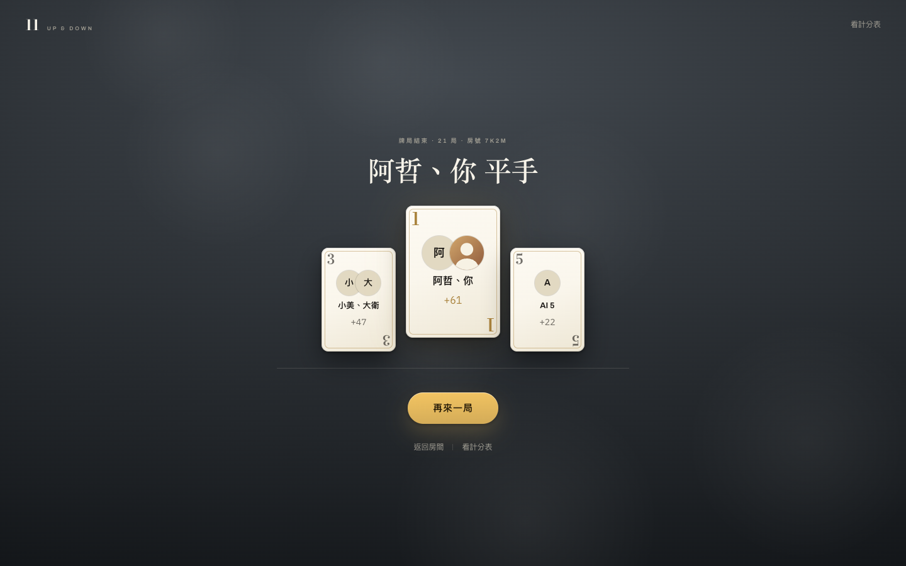
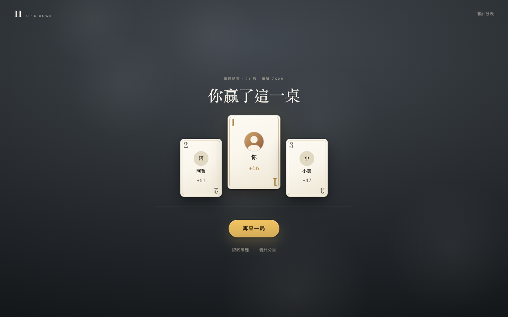
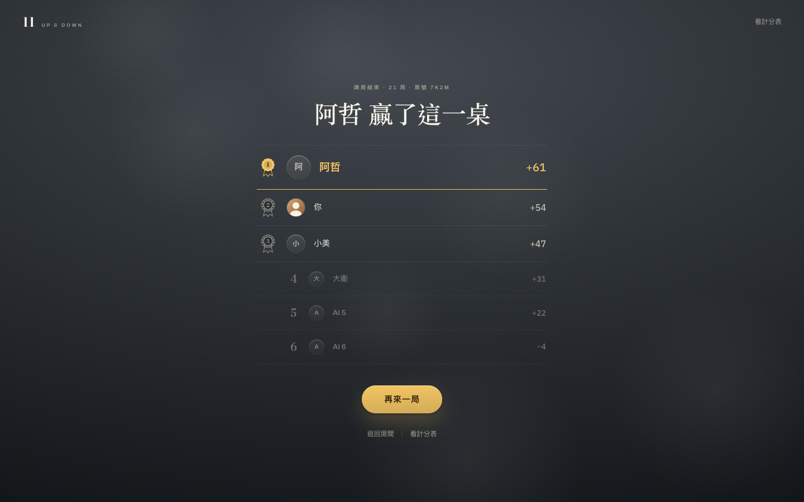
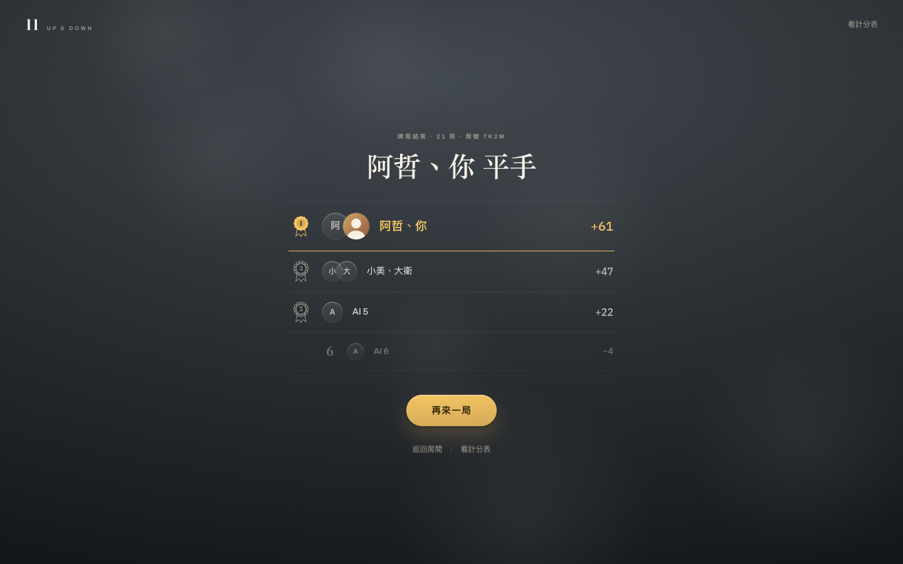
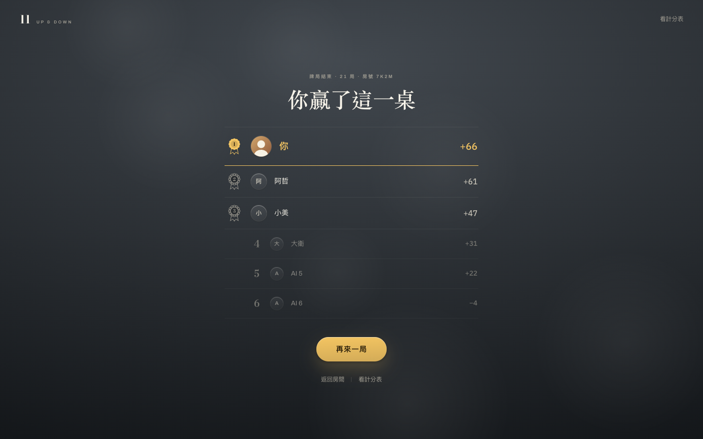
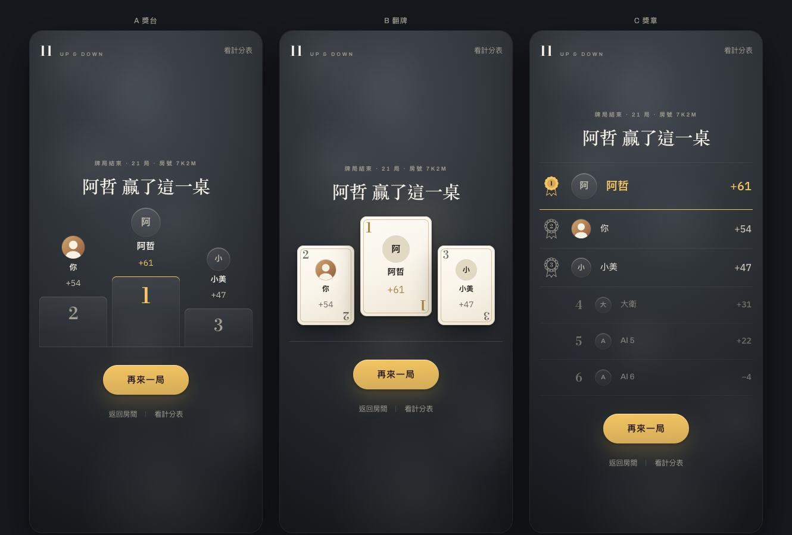

兩個要求：顏色統一成大廳那種感覺、三個獲勝者用圖示或動畫展示。 第一件三案都照做——收桌從牌桌上的綠玻璃卡改成一頁，石板灰、Bodoni 一句大字（寫的是誰贏了）、 線分隔、只有一顆銅色按鈕。第二件才是三案的題目：三個人怎麼站出來。 截圖是動畫跑完的樣子，動的部分要開原型看（切換器上有「重播」）。



最不用解釋的名次圖。台階是線稿（hairline 邊、比地亮一階的面），跟開房頁的橢圓座位表同一支筆， 第一階頂邊是銅色的。人要等台階到位才亮，最後上來的是冠軍。代價是佔的高度最多，多人同分時名字擠在一階上。



翻牌是這個遊戲自己的手勢：每局翻王牌、收桌翻名次。牌面是米色的紙（跟房號那四張牌位同一種）， 角落的索引寫的是名次不是點數，第一名那張大一號、放中間、最後翻。代價：米色牌面是這一頁唯一亮的「面」， 跟「頁面不加新的面」那條有一點張力——但它是牌，不是卡片。



最安靜的一個。不換形式，就是大廳／帳號頁那種印刷名單，多的是三枚 rosette （第一名整枚銅色，二三名線描）跟數字跑起來那一秒。其餘的人也在單子上，退到後面淡一階。 「有趣」全押在章跟數字上，沒有東西升起或翻面。

| 什麼在動 | 名次靠什麼讀 | 同分 | 代價 | |
|---|---|---|---|---|
| A 獎台 | 三階升起 | 高度 | 疊著站同一階 | 最高；多人同分擠 |
| B 翻牌 | 翻面 | 牌角索引 | 同一張牌多個頭像 | 唯一亮的面 |
| C 獎章 | 蓋章＋數字跑 | 章 | 同一列 | 最像現在那張表 |